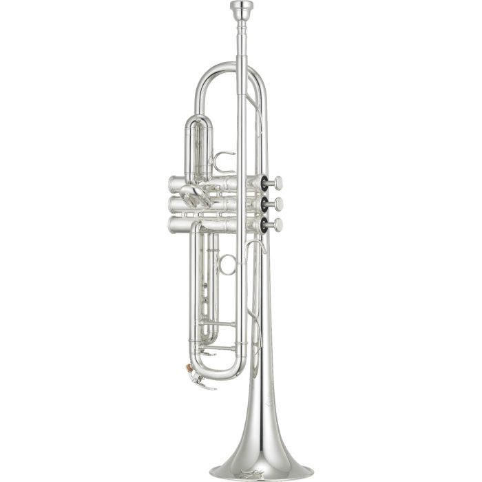

I have been playing the piano ever since I was 8 years old.
This is my maine instrument, and I have played it more than
any other instrument.
I play the trumpet in my high school's jazz and symphonic
band, and I am first chair in both. In jazz band, the first
trumpet sets the style and volume for the entire band, so
it's a big responsibility.


I started playing guitar during covid, and it's probably
the most relaxing of the three to play. It's much easier to
sit down and sing while playing the guitar than on either of
the other two instruments I play. Additionally, it has lead
me to discover I enjoy playing bass as well, so I might
be able to add that to my list of instruments soon.